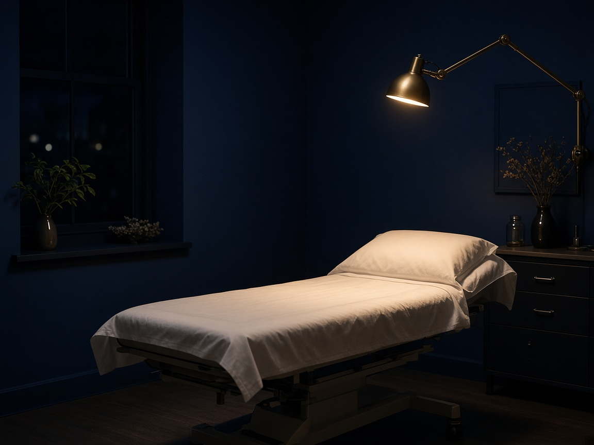

About
Who we are
Two high school students in Charlotte, North Carolina started MediLink because existing clubs split the work. One club trains clinical skill. Another trains business. A third treats technology as a side interest. Health systems do not work that way. A hospital, an insurer, and a software vendor are already in the same case, whether a student has language for that or not. We ask members to hold all three on one case from the first meeting.
01 / What we are
A student-founded network of high school chapters.
MediLink is a nonprofit chapter network. Members learn how real health systems work: a clinical problem, a money problem, and a technology problem at once. Chapters share one officer structure, one public syllabus, and one competition calendar. The work is chapter meetings, four tracks, twelve modules, and five competitions.
We are not a hospital foundation and not a career-club franchise. We do not place students in clinical roles from this website. Shadowing and internships run through partners and chapter advisors after leadership sets up the relationship. Nationals is the yearly flagship. The Apex is the biennial upgrade of that National round, not a sixth competition with its own case.
The work
Meetings, a four-track syllabus, and five competitions. Clinical, money, and technology problems stay on the same case. Full lessons wait behind chapter approval. The public page is the syllabus overview.
Mission
Train the next generation of healthcare problem-solvers by combining clinical understanding, financial reasoning, and technological literacy through chapters, curriculum, and competition. That sentence is also on the Goals page. If you change one, change both.
02 / Vision
Walk into any of the three worlds already fluent.
The vision is a nationwide student network where every chapter graduate can walk into a hospital, an insurance company, or a health-tech startup and already understand how those three worlds connect. Fluency here does not mean a license to practice. It means a student can name the patient, the payer, and the system that either helps or blocks care, and can write that down in a case.
That is why the three lenses are not electives. A member who only studies clinic will miss why a good idea never ships. A member who only studies finance will optimize a problem they cannot describe. A member who only studies tech will ship a tool nobody asked for. The vision is the student who can hold all three.

03 / Clinical lens
What is the actual health problem, and who is affected?
The clinical lens asks for the condition, the patients or communities, and the gap in care. Who is left out, and why. Rural distance, uninsured families, delayed diagnosis, language access, and wait times are examples of gaps, not a complete list. The job is to name the people and the harm in language a judge can follow, not to hide behind a slogan.
Skip this lens and a team writes a business plan for a problem it cannot describe. In Nationals, the Care award is Best Clinical Insight. Packets still use the internal name Care for this lens. The public site names it the clinical lens so a visitor does not need the packet jargon to understand the work.
Ask
Name the condition. Name who is affected. Name the gap. If you cannot point to a person or a community, you do not yet have a clinical problem. You have a theme.
In Nationals
Best Clinical Insight is the Care award. Teams of 3 to 4 must cover this lens, not assign it to nobody. A Grand Prize still has to hold clinic, money, and tech together.
04 / Financial lens
Who pays, what it costs, and whether it lasts.
The financial lens asks who pays, what the unit costs are, and whether the idea can last past a single grant cycle. Insurance, hospital billing, premiums, deductibles, employer coverage, public programs, and grants all belong here. If the money path fails, the clinical idea stays on the page. A team that cannot say who writes the check has not finished the case.
The chapter Finance / Treasury Lead owns this lens inside the chapter: Track 3 labs, budgets, and finance workshops. In Nationals, the Cost award is Best Financial Model. Packets still use the internal name Cost. This page uses financial lens so the public copy stays readable.
Ask
Who pays today. What it costs to deliver the idea. What happens when the first grant ends. Unit economics in health are not the same as a typical consumer product. Track 3 is built for that difference.
Owner
Chapter Finance Lead. Track 3 labs. Nationals Cost award: Best Financial Model. Sponsors can name a track or award. Individual gifts do not buy a named corporate tier.
05 / Technology lens
How data, software, or infrastructure changes access.
The technology lens asks how records, telehealth, devices, or a simple tool change access or operations. The test is outcome, not novelty. A finished product is not required. A wireframe, a workflow, or a device concept can be enough if the team can say what changes for the patient or the clinic. Coding background is not required to take Track 2.
The chapter Technology Lead owns this lens: Track 2 content and the chapter's digital projects. In Nationals, the Code award is Best Tech Innovation. Packets still say Care, Cost, Code. Keep that internal name in packets and in any place that has to stay in sync with the case. On this public site, say technology lens unless you are naming the packet.
Ask
What system sits between the patient and care today. What the proposed tool actually changes. Who has to adopt it. If the answer is only that the idea is new, it is not yet a technology solution.
Owner
Chapter Technology Lead. Track 2 and digital projects. Nationals Code award: Best Tech Innovation. Innovation Challenge is the separate annual pitch event and does not replace this lens on a Nationals case.
06 / Aims
What we aim to achieve
The same six aims live on the Goals page. They describe the work, not results already in hand. Do not rewrite them as accomplishments until the board can point to the work.
- Train students to apply the three-lens framework to real health-system problems, not to a single club specialty.
- Grow a nationwide chapter network with a shared officer structure, curriculum, and starter kit so a new school is not inventing the first semester.
- Run four annual competitions plus a biennial Apex, with Nationals as the yearly flagship and the only Regional to State to National ladder.
- Connect members with clinical, finance, and health-tech partners for shadowing, internships, and research after leadership sets up each relationship.
- Give students titles, projects, and competition experience that transfer to college and career, including officer roles and Nationals packets.
- Give back through chapter service and outreach, owned inside each chapter by the Outreach and Service Lead.